CloudCompareと点群で3Dモデルの作成
航空・地上レーザー測量で取得したポイントクラウドを3Dモデルにする手法を解説します。ポイントクラウドの点と点をつないぐことで、以下のように面を作成できます。学習をはじめる前に、実習用データを入手してください。また、この実習ではマウスを用います。

Menu
- ソフトウェア
- 実習用データ
- LAS (.las)
- 起動と利用設定
- ファイルの読み込み
- 表示
- 点群密度の表示
- 点の間引き
- 処理範囲の抽出
- 2.5D メッシュ化
- 法線の計算
- メッシュの作成
- データの保存
- 練習問題
ソフトウェア
本実習では、CloudCompareを使用する。Download内のLatest stable releaseのインストーラーを入手し、インストールする。以下では、Windows環境で、2.13.2 Kharkiv (7/08/2024)を使用している。
CloudCompareの利用例を高精細地形情報取得のためのオープン教材で事前に確認しておくと以下の実習がスムーズに行えます。
実習用データ
以下では、G空間データセンターにある石川県「令和 2 年度 森林情報整備事業」成果データのnotowest14.zipのうち07F02014.las（輪島市門前町）を実習用データとして使用する。ダウンロード後に、ZIPファイルを展開する。
LAS (.las)
- LIDARデータのファイル形式のひとつ(パブリック規格)
- LAZ（.laz）という圧縮形式のファイルもある
- 各ポイントにX、Y、Zなどの位置情報、測量時の反射強度、RGBなどの情報を格納
- バージョンが存在、2019年時点で1.4が最新（ASPRSで承認）
https://www.asprs.org/divisions-committees/lidar-division/laser-las-file-format-exchange-activities
起動と利用設定
インストール後、CloudCompareを起動する。
- DB Tree：各ファイルの選択や表示・非表示ができる
- Properites：各ファイルの詳細情報の参照、3Dビューでの可視化の調整
- 3Dビュー：ファイルが3D表示できる
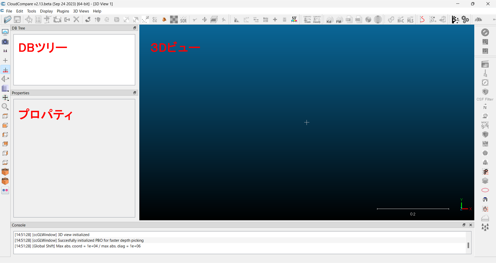
言語とスケールバー
言語は、Display > Language Translation から選択できる（No Translationのままで問題ない）。スケールバーは、Set current view modeアイコンからOrthographic projectionを選択すると表示するモードになる。
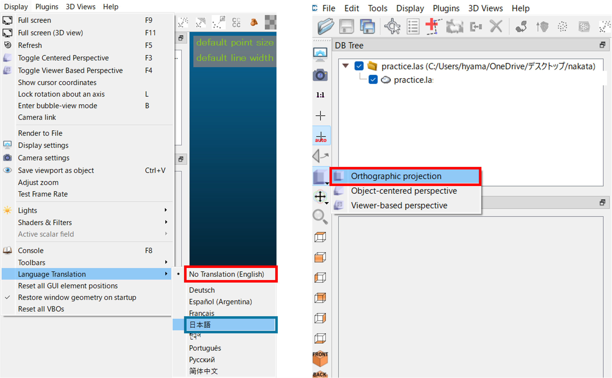
不明な点は、ヘルプ内のwikiを参照
ファイルの読み込み
07F02014.lasを以下のようにドラッグアンドドロップし、Applyを選択する。
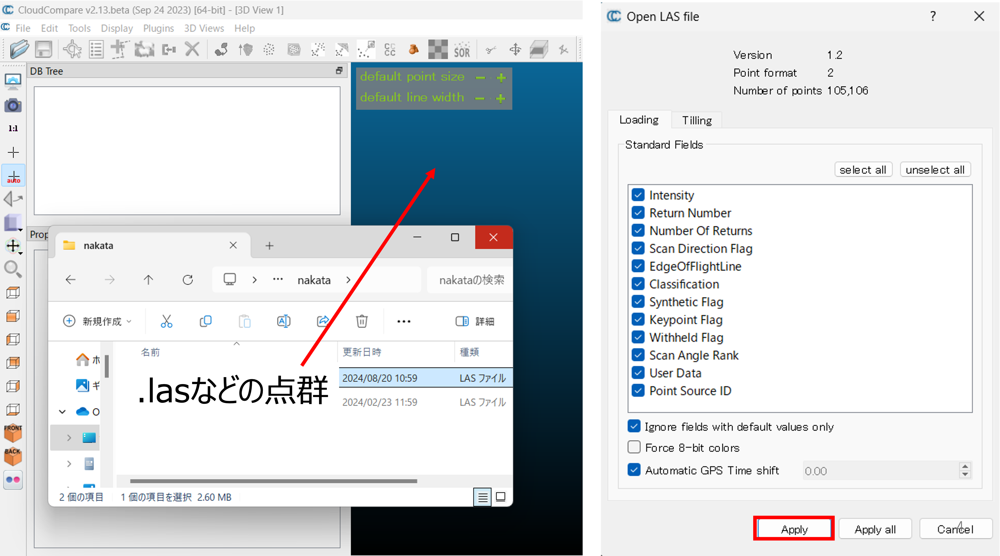
Global shift / scaleは、Yesを選択する。ファイルが読み込めたら、Properitesから点の数などを確認しておく。
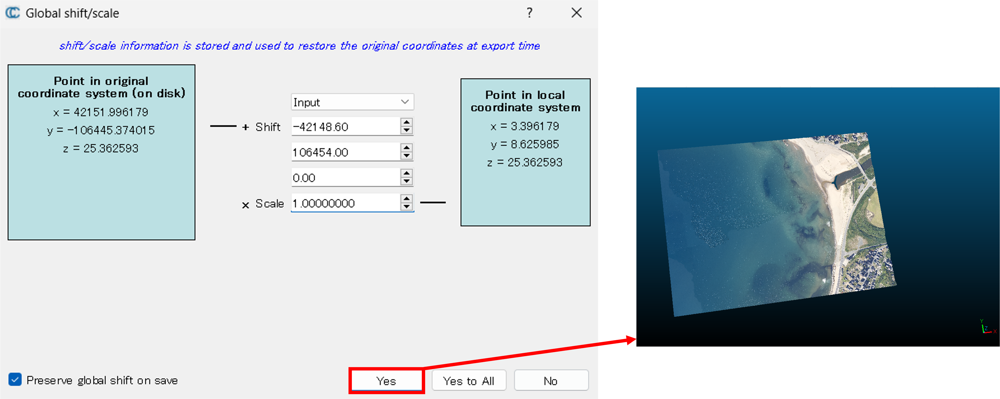
表示
アイコンを使用したり、マウス操作で3Dビューの視点を調整できる。

- 左クリック：角度の調整
- 右クリック：移動
- ホイール：ズーム
点群密度の表示
Tools > Other > Compute geometric featuresを選択し、デフォルト値のまま、Volume densityにチェックを入れOKをクリックする。
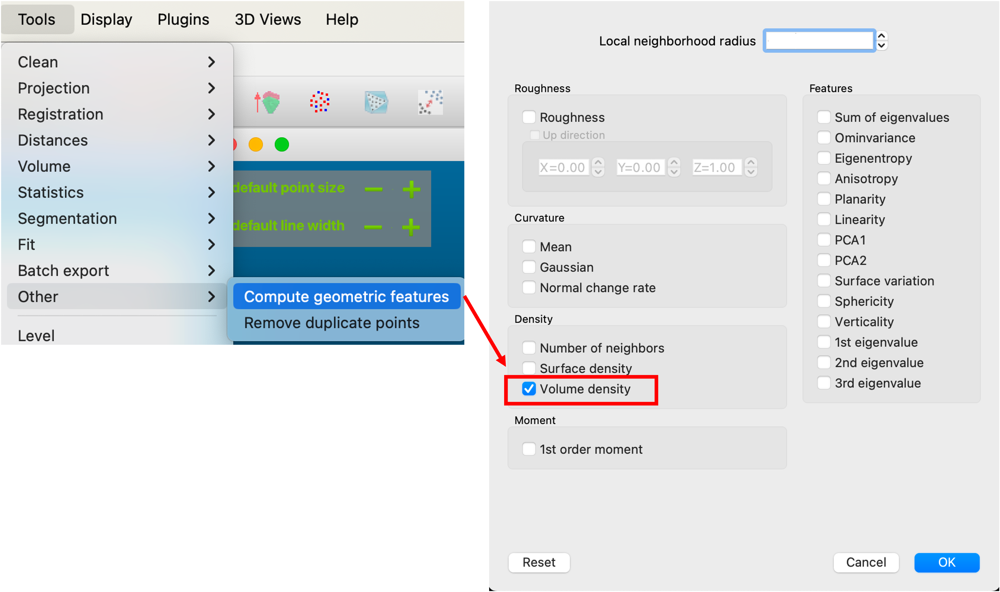
Properites > CC objectがScalar fieldになっていることとScalar fieldsがVolume densityになっていることを確認し、Color scaleを調整することで、点群の色分けが設定できる。3Dビューを戻す時は、Properites > CC objectをRGBにする。
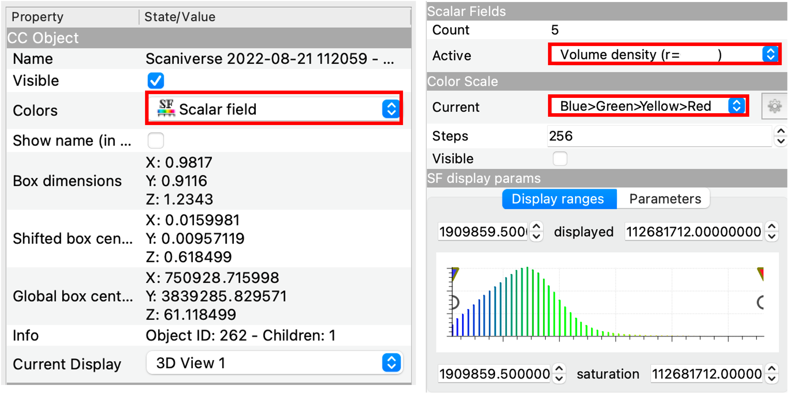
点の間引き
Cloud sub samplingアイコンをクリックすれば、任意の値を最小値として点群を間引くことができる。今回は、0.1（10cm）としたが、データによって最適な値を設定する必要がある。
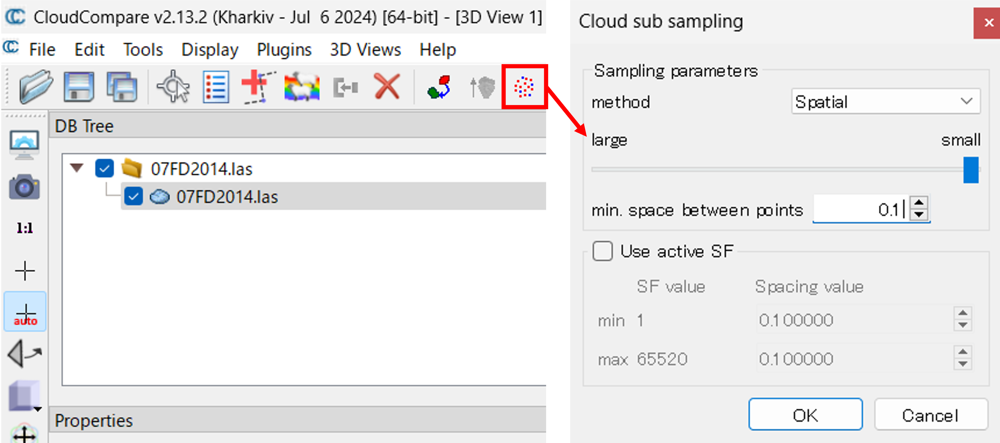
処理範囲の抽出
次の手順で、今回処理する範囲を抽出する。

Polygonal selectionを選択- 自由領域を作成、最後に右クリックする
- セグメントインで抽出
- 切り出しか、上書きが選択できるが、今回は右から2番目のアイコンを押して上書きする
2.5D メッシュ化
Edit > Mesh > Delaunay 2.5D (XY plane)を実行すると、簡易的なメッシュができる。生成したモデルを確認すると、現実ではオーバーハングしている箇所がうまく反映できていないことがわかる（平坦な裸地の点群データであれば、この手法でも十分に現実を再現できる）。
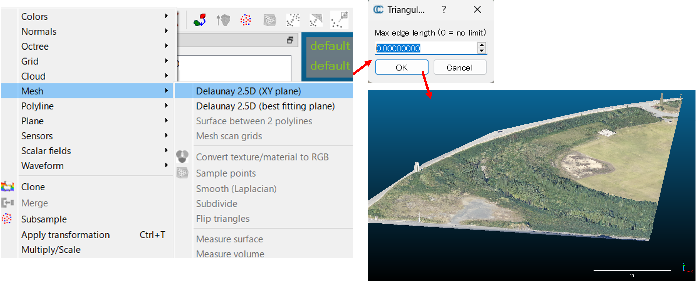
法線の計算
3Dメッシュを作成するために、法線を計算する。Edit > Normals > Computeをクリックする。次に、Surface approximation > Triangulationを選択する。目安として、Planeはノイズに強くてエッジに弱い、Triangulationはノイズに弱くてエッジに強い、Quadricは曲面に強いといった特徴がある。Use Minimum Spanning Treeについて、今回はknn = 6で実行する。本来は点群の質によって調整する必要がある。
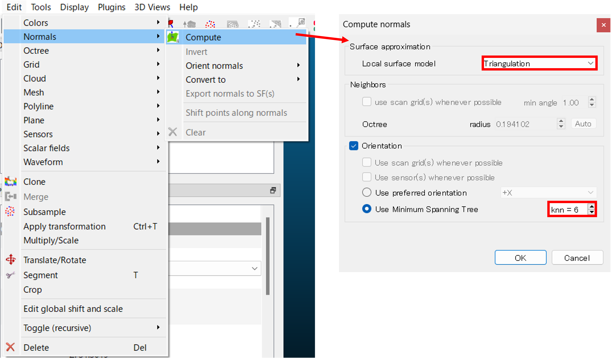
※ 法線の方向は、Properitesで可視化できる。
メッシュの作成
Plugins > PoissonReconを選択する。今回は、Octree depthを8とする。Octree depthでは、ボクセル（立方体）をその段階まで分割するかを設定する。一般的には、7〜9の間で設定する。次に、Advancedのboundary > Dirichletにして実行する。boundaryのうち、Freeは境界を自由な形状にする、Dirichletは境界を固定にする、Neumannは境界部を連続的にする設定である。
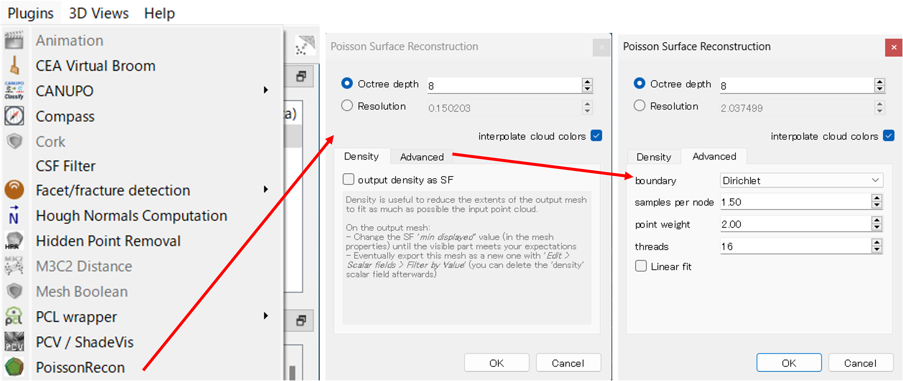
データの保存
DB Tree上で作成したMeshを選択して、Save current entityのアイコンをクリックし、モデル.plyで保存する。保存したファイルは別のソフトウェアでも表示できる。
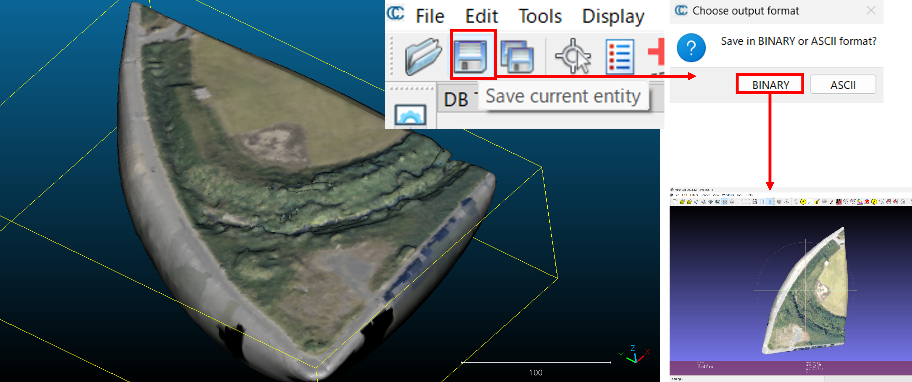